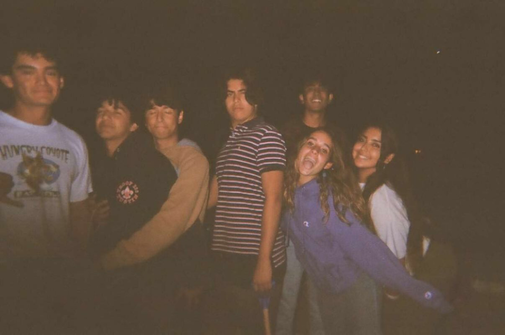
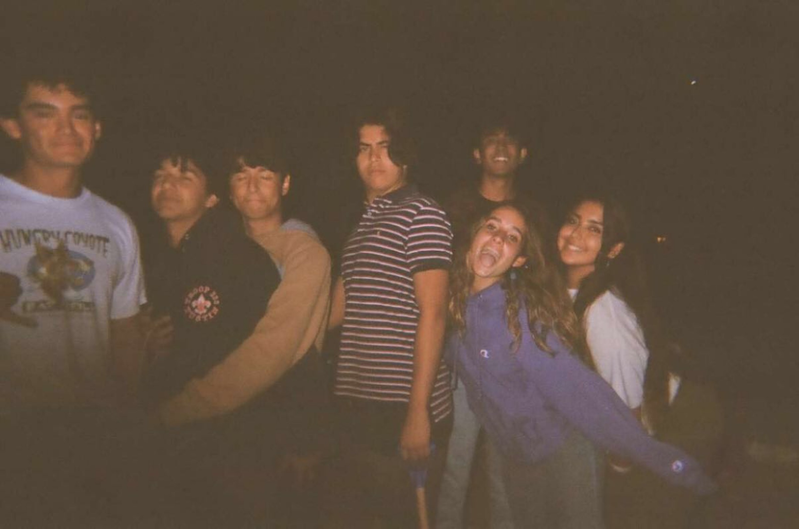

Born and raised in Southern California. I’m currently a first-year student majoring in Computer Science at University of California, Riverside. Creating Digital Media such as Videography and Photography is my favorite hobby. I first took interest when I took a film class during my senior year of high school. Ever since the first day of that class, I’ve been slowly developing it, making short films. Watching and critiquing films is also another part of it, as I learn and get inspiration from the films I watch.
This Website
I was thinking to myself what type of coding project I could do to better my skills, I asked one of my friends and he told me a website. Immediately, I knew that this would it would be my next project. Something that I could show to the public very easily.
CutieCalculator
This project was made during a 12 hour hackahon called Cutie Hack. Me and a group of 3 others decided to emulate the app Photomath, which scans a handwritten problem and solves it.
My Lens
My Lens is a short film that was I created towards the end of 2021. For the final in my film class, I was given a prompt that focused on showing your environment, the people around you. However, after turning in the film, I wasn’t satisfied with it. And so I took the winter break to film new content and to make changes in post production. And I loved the outcome of it so I decided to share it on Instagram.
PERSONAL PORTRAIT
Personal Portrait was also a final project assigned to me, this time towards summer of 2022. There are definitely similar elements to My Lens, but one difference outweighs them all. I did not appear in the film at all. That was the main prompt, to show everything around you but not yourself. And this way, the viewer is able to grasp your surroundings even without me present.
Assassin
Assassin was a group project, assigned at the beginning of the year 2022. It was all part of turning in our films to the All American Film Festival which had a due date around Spring. Originally I had other ideas in which I wrote scripts and tried to film for, but couldn’t due to scheduling issues. So before it was too late for the, my group tried to capture an event happening right in front of us. Furthermore, we tried to emulate the game “Senior Assassin” and the result can be seen here.


 
